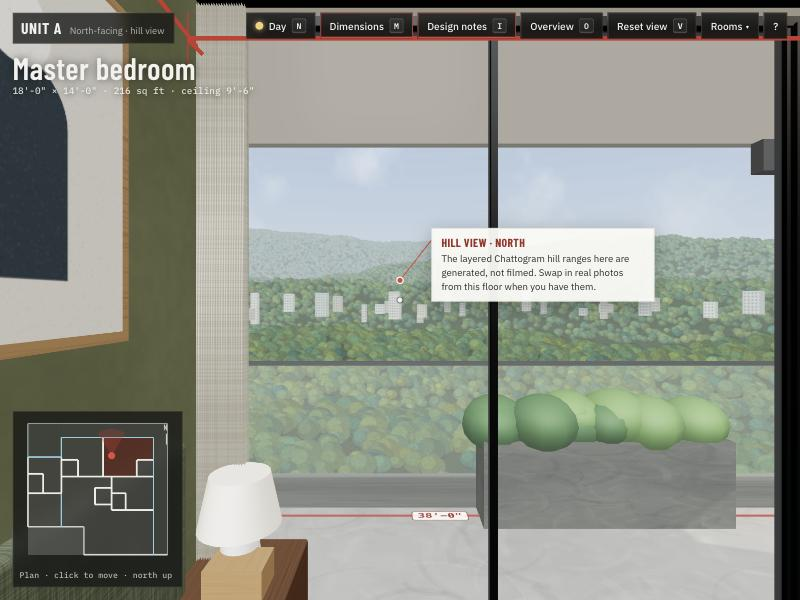
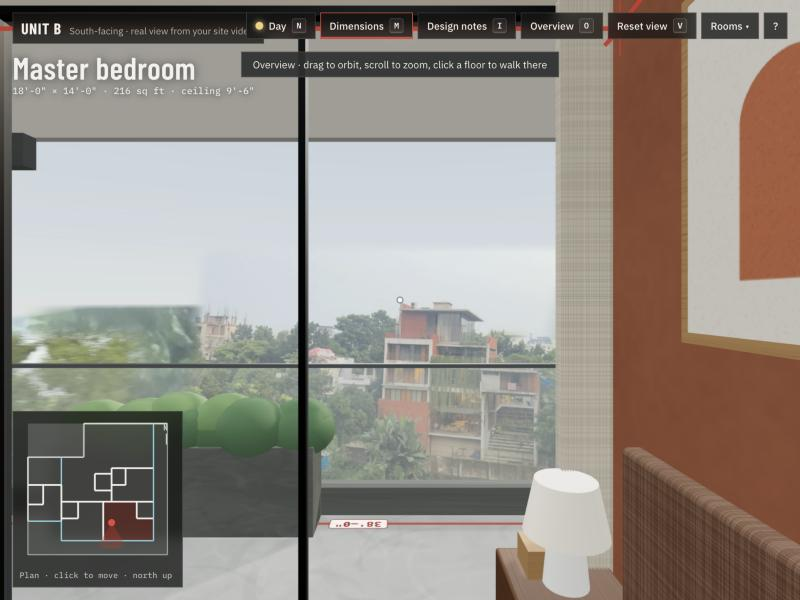
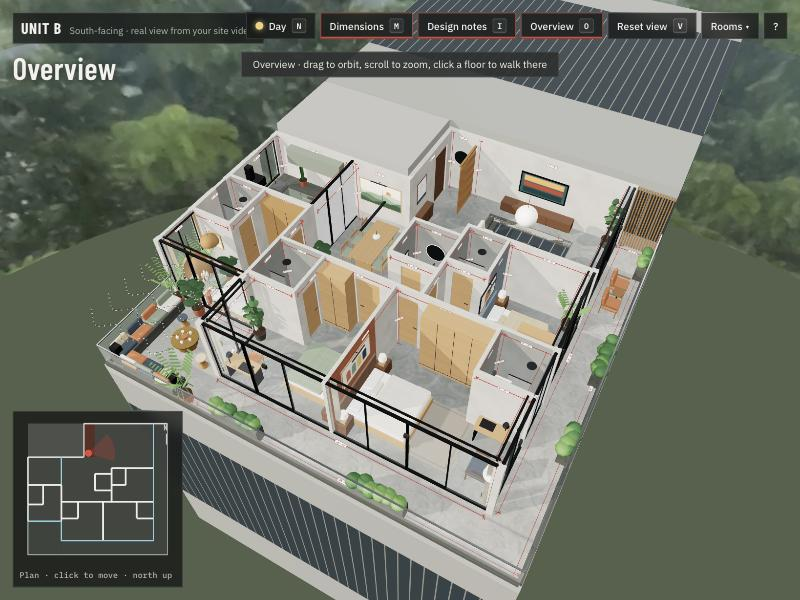
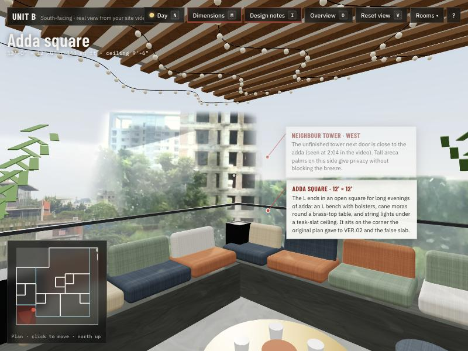
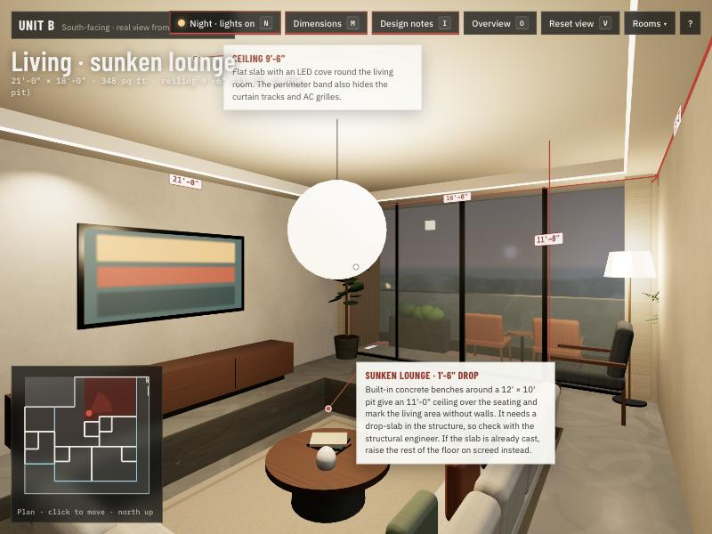
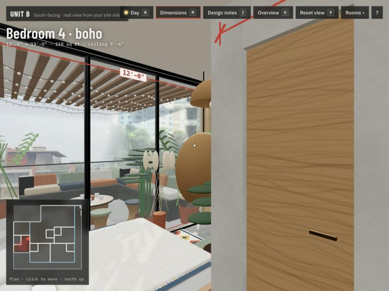

Unit ANorth-facing · hill view
- Layered hill ranges to the north (a generated view)
- Morning sun on the east glass, even north light all day
- Forest, olive and clay accent walls
Both flats are redesigned inside the original plan's boundaries. Each has four bedrooms with their own baths and an L-shaped balcony that every bedroom and the living room open onto, ending in a square adda corner. Floors are plain cement, walls textured grey, and every wall is dimensioned in feet.


Best on a laptop or desktop with a keyboard. On phones, use the on-screen arrows and drag to look.




Unit boundaries are read from a photo of the 2nd–9th floor presentation plan (construction area 4,818 sq ft): about 50'-0" × 47'-0" per unit, minus the stair and lift core. Dimensions are wall centre-lines.
The sunken lounge drops 1'-6" and needs a lowered slab in the structural design.